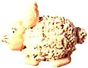
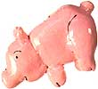

MOTHER'S CHILDREN
I live outside Noxon, Montana, in the county with the worst employment rate in the state. It's hard for adults to get jobs around here-and even harder for young people. Still, I wanted to earn a little money.
First, the neighbors hired me to pick rocks from fields they were going to plow. I also helped build some fences. Then, during the summer, I animal-sat for rural residents who were gone on vacation. I'd ride Whiskey, my horse, miles through the woods to do the chores on their homesteads. It was hard work with low pay, but any extra income helped.
By the end of fall, odd jobs were hard to come by. Then one day I was watching Mom make some bread dough (often called baker's clay) ornaments for our Christmas tree. I came up with some designs of my own and took them to school to show my friends. Everyone, including the teachers, wanted to order some! I started making more. I sold the littlest hangings for 50 cents each and the fanciest ones for $4.50. By the time Christmas was over, I had made $50. That was over and above the money I saved by sending dough ornaments to all my relatives for presents. (Everyone liked them so much they hinted that they'd like to receive ornaments every year.)
I also found that dough ornaments were good for other occasions. For Valentine's Day I made "Love Nuggets," little red hearts with fancy ribbons and the words "I Love You" on them. At Easter, bunnies, chickens and painted eggs became popular. All told, I made about $100 during the year. I could have made more ornaments and money, but I'm often interrupted by having to help get dinner, do the dishes or tend Mom's new baby. While making money motivated me at first, I've had many other rewards. I've always been a little bookish and shy. I never was particularly good at any kind of artwork or crafts. So it was wonderful to hear my peers say, "Gee, I didn't know you were so talented," or "I had no idea you had this side to you." I never knew, either-until I tried. Actually, giving and sharing have been the best part of making baker's clay ornaments. I've been able to take plain flour, water and salt and turn them into something cute, funny and personal-something that could not be bought anywhere else because it came from my own imagination.
HOW TO DO IT
Combine 1 1/2 cups of hot water with 1 cup of salt and 3 cups of all-purpose or bleached flour. Stir well. Slowly add more flour if needed, up to another cup, to make a good dough. Knead the dough for 5 minutes, until it's smooth but not sticky. (If the dough gets sticky as you work, add more flour or use a small amount of cooking oil on your table or hands.) And remember, this is not supposed to be food.
Think of every ornament you make as a combination of squares, circles and triangles. For instance, my angel has a large triangular body, two smaller triangular wings, two other triangles for sleeves and a circular head. Cut your shapes from dough rolled out 1/8 to 1/2 inch thick, and join them together by rubbing water on the joints. Set a hairpin "hanger" in the top.
Use a ball of dough the size of a walnut to make a head and rounds the size of tiny pebbles to make toes. Use a garlic press to squeeze out hair or fur and a nut pick to do fine modeling. Don't make your ornaments too big-they'll weigh down tree branches and be more likely to break. Mine are 2 to 3 inches tall.
Bake the figures at 350°F for 12 to 20 minutes, until they're thoroughly dry. You can also bake them in a microwave oven. In that case, salt the tray and the top of the ornaments, and cook them on "Low" about 1 1/2 minutes for each piece. Remove them to a wire rack to cool before painting them. Use acrylic paints, and finish with varnish.
|
|
|
 |
|
 |
|
|